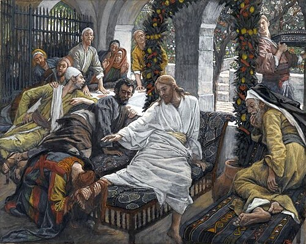
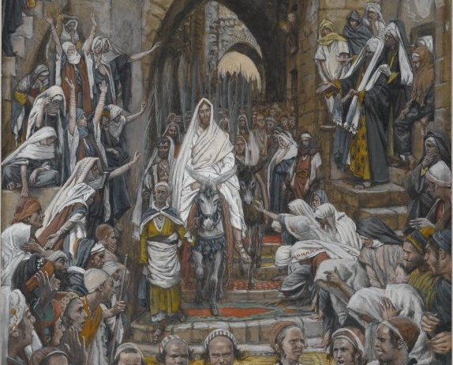
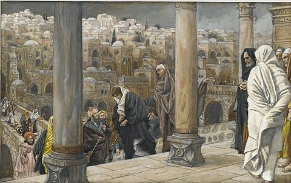
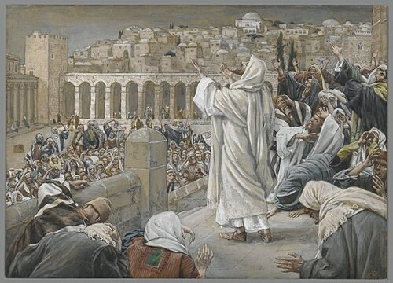

John 12
The hour is come
Mary pours out her best, the crowds wave palm branches, and Jesus explains why a seed has to die.
Things to watch for
Keep these questions in the back of your mind as we read. We'll come back to every one of them at the end.
- WorshipWhat did Mary's gift cost, and why did she give it?
- The heartWhat was really going on inside Judas?
- Who Jesus isWhat kind of King rode into Jerusalem?
- Dying to liveWhy must a corn of wheat fall into the ground and die?
- The crossWhat did Jesus mean by “lifted up”?
- Confessing himWhy did some believe but stay quiet?
Part one
Supper at Bethany
Verses 1–11
A jar of perfume, and two very different hearts.
A year's pay, poured out
“And when he had agreed with the labourers for a penny a day, he sent them into his vineyard.”
Matthew 20:2
Spikenard was a perfume made from a plant that grows far off in the mountains of India. A “pound” was about twelve ounces. This may have been the most valuable thing the family owned, and Mary poured all of it out on Jesus.
Always at his feet
Every time the Bible shows us Mary of Bethany, she's in the same place:
- ListeningLuke 10:39
- GrievingJohn 11:32
- WorshippingJohn 12:3
“And she had a sister called Mary, which also sat at Jesus’ feet, and heard his word.”
Luke 10:39
Feet were the dirtiest part of a person, and washing them was a servant's job. A woman letting down her hair in public was something you just didn't do. Mary didn't care how it looked. She held nothing back.
And “the house was filled with the odour.” Real worship doesn't stay private. Everyone in the room could smell it.
Good words, crooked heart
Judas sounded like the most caring man in the room. He was the treasurer, “the bag” was the money box, and he'd been helping himself.
John pulls the cover off. Judas wasn't thinking about the poor. He was thinking about what he could have skimmed.
Most of us know this one. An addiction can always find a good-sounding reason. A man can say all the right words while the bag gets emptier. Jesus sees under the cover, and he'd rather we bring it out to him than keep hiding it.

“Let her alone”
Jesus stands up for her. What looked like waste to Judas was beautiful to him.
Perfume was used to prepare a body for burial. Jesus says she has done that ahead of time. Within a week he'll be in a tomb. She may have understood that better than any of the twelve.
“The poor always ye have with you” isn't Jesus shrugging off the poor. The law told Israel to keep giving to them (Deuteronomy 15:11). He's saying this moment, with him there in the room, won't come again. Some chances to love him only come once.
Kill the evidence
Lazarus didn't preach a sermon. He just sat at supper, alive. That was enough to bring crowds, and enough to get him on a hit list.
Your changed life works the same way. People who knew the old you notice when you're sober, honest, and at peace. You don't need to be a speaker. A man who was dead and is now alive is the evidence.
Part two
Thy King cometh
Verses 12–19
Palm branches, shouting crowds, and a young donkey.
It's a Hebrew cry for help that became a shout of praise. The crowd is quoting a Passover psalm:
“Save now, I beseech thee, O LORD: O LORD, I beseech thee, send now prosperity. Blessed be he that cometh in the name of the LORD: we have blessed you out of the house of the LORD.”
Psalm 118:25–26
Palm branches were waved for victory and for the nation. The crowd wanted a King who would save them from Rome. He came to save them from something far worse.
A King on a donkey
Kings rode warhorses when they came to fight. A donkey said, I come in peace. Five hundred years earlier, Zechariah had said exactly how Israel's King would arrive:
“Rejoice greatly, O daughter of Zion; shout, O daughter of Jerusalem: behold, thy King cometh unto thee: he is just, and having salvation; lowly, and riding upon an ass, and upon a colt the foal of an ass.”
Zechariah 9:9
“Sion” is Zion, another name for Jerusalem. He came lowly, to the people who would kill him within the week, offering peace.

“The world is gone after him”
The Pharisees meant it as an exaggeration: everybody's following him! John lets it stand, because it's truer than they knew.
Look at the very next verse. Greeks show up, people from outside Israel, asking for Jesus. The world really is coming after him.
And the disciples? They didn't get it “at the first” (v. 16). Only after the resurrection did it click, just like in John 2:22. It's fine not to understand everything yet. Keep following.
Part three
The hour is come
Verses 20–36
“Sir, we would see Jesus.” And he talks about dying.
We would see Jesus

These Greeks were Gentiles who worshipped Israel's God and came up for the feast. They went to Philip, who had a Greek name and came from Bethsaida, near Gentile country.
And Andrew is bringing people to Jesus again. He brought his brother Simon (1:41–42), and the boy with the loaves (6:8–9). Now he brings the world.
“Sir, we would see Jesus” is the cry of every lost man, whether he knows it or not. Some old pulpits have it carved where the preacher can see it, to remind him what people came for.
At last: “The hour is come”
Remember the clock that started ticking in John 2?
When the Greeks arrive, the countdown ends. The cross is days away. And Jesus calls his death being “glorified.” Not defeated. Glorified.
A corn of wheat
In the KJV, “corn” means any grain, here a single kernel of wheat. Keep it in the barn and it stays one kernel forever.
Put it in the ground, and it “dies.” The kernel as it was is gone.
But up comes a stalk, then many, each with a full head of grain. Jesus is talking about himself: one death, and a harvest of millions who will live because of it.
Lose it to keep it
“Hate” here means love less by comparison. Jesus isn't telling you to despise yourself. He's saying: don't cling to the old life so hard that you lose the real one.
Every man in recovery knows this. Holding on to the old life is what was killing you. Letting it go, like the seed, is how new life starts. And the promise for the man who follows: “him will my Father honour.”

Troubled, and still willing
Jesus doesn't pretend the cross is easy. “Now is my soul troubled.” He even says the words out loud, “Father, save me from this hour,” and then turns them down. This is what he came for.
Three times in the Gospels the Father speaks out loud from heaven about his Son:
- At his baptismMatthew 3:17
- On the mountainMatthew 17:5
- On the way to the crossJohn 12:28
Some heard only thunder. People often hear what they're ready to hear. Jesus said the voice came “for your sakes” (v. 30).
Lifted up
John tells us plainly what it means: “signifying what death he should die.” Lifted up from the earth, on a cross.
He'd said it before, to Nicodemus: “as Moses lifted up the serpent in the wilderness, even so must the Son of man be lifted up” (3:14). Look and live.
And he draws all men: Jews and Greeks, religious men and criminals, all kinds of people from every side. The cross pulls on every heart. Whosoever will may come.
At the same time, “the prince of this world,” Satan, is thrown out. What looked like his victory was his defeat.
While you have the light
The crowd wants to argue about titles: who is this Son of man? Jesus doesn't debate. He warns them. The light is here now, and it won't stay forever.
“(For he saith, I have heard thee in a time accepted, and in the day of salvation have I succoured thee: behold, now is the accepted time; behold, now is the day of salvation.)”
2 Corinthians 6:2
Don't wait until you have it all figured out. If you can see the light today, walk toward it today.
Part four
Light or darkness
Verses 37–50
So many signs, so few who believed, and Jesus' last public call.
From “would not” to “could not”
Verse 39 says “they could not believe.” But verse 37 comes first: they had seen sign after sign, and they would not. God didn't stop anyone from believing who wanted to. He gave them over to what they kept choosing.
It's the same pattern as Pharaoh. First “he hardened his heart” (Exodus 8:15), again and again. Only after that did God harden it further. God wants every man saved:
“The Lord is not slack concerning his promise, as some men count slackness; but is longsuffering to us-ward, not willing that any should perish, but that all should come to repentance.”
2 Peter 3:9
“While it is said, To day if ye will hear his voice, harden not your hearts, as in the provocation.”
Hebrews 3:15
Isaiah saw Jesus
Isaiah 6:1
“In the year that king Uzziah died I saw also the Lord sitting upon a throne, high and lifted up, and his train filled the temple.”
John 12:41
“These things said Esaias, when he saw his glory, and spake of him.”
“Esaias” is Isaiah. About seven hundred years before Bethlehem, he saw the LORD on his throne, and John says the One he saw was Jesus.
Notice the words: “high and lifted up.” The King Isaiah saw on the throne is the same One who would be lifted up on a cross.
Believed, but kept quiet
Some of the rulers believed. But being “put out of the synagogue” meant losing your standing, your friends, maybe your family. So they kept quiet.
John puts it bluntly: they loved the praise of men more than the praise of God.
We know that pull. What will the old crowd say? What will my family think? But there's hope here. One of those rulers, Joseph of Arimathaea, a secret disciple “for fear of the Jews” (19:38), finally stepped out and asked for Jesus' body.
“Whosoever therefore shall confess me before men, him will I confess also before my Father which is in heaven.”
Matthew 10:32
His last public words
After this, Jesus teaches only his disciples. John sums up his whole public message in these few verses:
See him, see God
To trust Jesus is to trust the Father. To see him is to see the Father.
Light
Whosoever believes doesn't have to stay in the dark.
To save
He came to save the world, not to condemn it.
The word judges
Turn him down, and his own words will be the evidence at the last day.
Life
Everything he said came from the Father, and it is life everlasting.
The door is wide open, “whosoever believeth.” But it won't stay open forever. The same words that offer life today will judge the man who refuses them.
Points to remember
- Worship“The house was filled with the odour of the ointment” 12:3Mary gave Jesus her very best, without worrying how it looked. He's worth it.
- The heart“He was a thief, and had the bag” 12:6Good words can cover a crooked heart. Jesus sees under the cover.
- Who Jesus is“Thy King cometh, sitting on an ass's colt” 12:15The true King came lowly, bringing peace and salvation.
- Dying to live“If it die, it bringeth forth much fruit” 12:24His death brings life to many. Letting go of the old life is how ours begins.
- The cross“I, if I be lifted up from the earth, will draw all men unto me” 12:32On the cross, Jesus calls every kind of person to come to him.
- Confessing him“They loved the praise of men more than the praise of God” 12:43Don't trade God's approval for the crowd's. Stand up for him.
Question 1 of 6
WorshipWhat did Mary's gift cost, and why did she give it?
What verses tell us about this?
Answer
About a year's wages, maybe the family's most valuable possession. She gave it because she loved him and seemed to understand he was going to die. She wasn't worried about the cost or what people thought. Jesus called it a beautiful thing, not a waste.
Question 2 of 6
The heartWhat was really going on inside Judas?
What verses tell us about this?
“But the LORD said unto Samuel, Look not on his countenance, or on the height of his stature; because I have refused him: for the LORD seeth not as man seeth; for man looketh on the outward appearance, but the LORD looketh on the heart.”
1 Samuel 16:7
Answer
Greed. He talked about the poor, but he was stealing from the money bag. His words sounded caring; his heart was set on money. People may be fooled by the right words, but God looks at the heart. Better to bring what's hidden into the light than to keep covering it.
Question 3 of 6
Who Jesus isWhat kind of King rode into Jerusalem?
What verses tell us about this?
“Rejoice greatly, O daughter of Zion; shout, O daughter of Jerusalem: behold, thy King cometh unto thee: he is just, and having salvation; lowly, and riding upon an ass, and upon a colt the foal of an ass.”
Zechariah 9:9
Answer
A lowly King who came in peace, on a donkey, not a warhorse, just as Zechariah said. The crowd wanted a fighter to throw out Rome. Jesus came to save them, and us, from sin and death, and he was willing to die to do it.
Question 4 of 6
Dying to liveWhy must a corn of wheat fall into the ground and die?
What verses tell us about this?
Answer
Because a seed that's kept stays alone, but a seed that dies becomes a harvest. Jesus was talking about his own death, which brings life to many. And the same pattern holds for us: letting go of the old life is how we find the real one.
Question 5 of 6
The crossWhat did Jesus mean by “lifted up”?
What verses tell us about this?
“And as Moses lifted up the serpent in the wilderness, even so must the Son of man be lifted up: That whosoever believeth in him should not perish, but have eternal life.”
John 3:14–15
Answer
His death on the cross. John says so: “signifying what death he should die.” Lifted up on the cross, Jesus draws all kinds of people to himself, and whosoever believes in him will not perish but have eternal life.
Question 6 of 6
Confessing himWhy did some believe but stay quiet?
What verses tell us about this?
“Whosoever therefore shall confess me before men, him will I confess also before my Father which is in heaven.”
Matthew 10:32
Answer
Fear of what it would cost them, and because they loved the approval of people more than the approval of God. We feel the same pull with family and old friends. But Jesus promises to stand up for the man who stands up for him.
Prayer requests
What can we pray about for you today?
“Let us therefore come boldly unto the throne of grace, that we may obtain mercy, and find grace to help in time of need.”
Hebrews 4:16